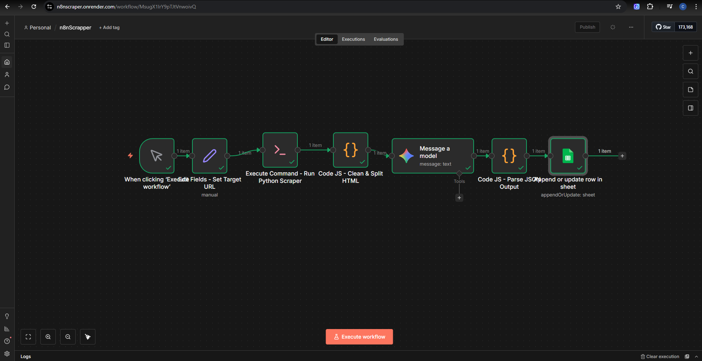

n8n Automated Scraper
An end-to-end operational automation that bypasses common anti-bot protections, scrapes dynamic multi-page e-commerce product data, and uses an LLM to convert raw HTML into a clean, standardized product catalog stored in a spreadsheet.
View Live Workflow View Repository
Key Features
Dynamic Rendering + Pagination
Uses Playwright + Chromium to render JavaScript-heavy pages, follow "Next" flows, and capture multi-page product listings reliably.
Anti-Bot Evasion
Supports manual anti-bot evasion to get past challenges that break traditional request-based scrapers.
HTML Pre-processing
Cleans, sanitizes, and splits raw HTML using low-code JavaScript inside n8n so the payload stays within model context limits.
LLM → Strict JSON Schema
Applies constraint-based prompt patterns to extract product details from messy markup and return standardized JSON.
Validation + Parsing
Validates and parses the model output in JavaScript to enforce data integrity before storage.
Spreadsheet Output
Writes the finalized structured payload into Google Sheets as a product catalog—ready for market research, pricing analysis, or inventory monitoring.
Workflow Logic Map
This automation is designed as a hybrid low-code + code pipeline: n8n orchestrates the run, while Python and JavaScript handle the heavy lifting.
- 1) Manual Trigger & Configuration: A manual trigger starts the run and an Edit Fields node sets the target URL and parameters.
- 2) Python Script Execution: An Execute Command node runs a custom Python CLI that uses Playwright + Chromium for dynamic rendering, pagination, and anti-bot handling.
- 3) Data Pre-processing: A JavaScript Code node cleans/sanitizes the HTML and chunks it to fit the model context window.
- 4) AI Structuring: A “Message a model” node extracts relevant fields and returns strict JSON using constraint-based prompts.
- 5) JSON Parsing: A second JavaScript Code node validates and parses the JSON to ensure integrity.
- 6) Data Storage: A Google Sheets node appends or updates rows, producing a clean product catalog.
Implementation Notes
The design focus is reliability in real operational conditions: dynamic pages, anti-bot friction, and messy markup.
Cross-Environment Integration
n8n triggers the Python scraper via CLI, then continues the pipeline using JavaScript nodes for text processing and JSON validation.
Grounded Extraction
The LLM is forced into a stable output format with strict constraints so downstream storage stays predictable.
Operational Output
Final results land in Google Sheets so non-technical users can review, filter, and analyze the catalog immediately.
Tech Stack
Outcomes & Job Alignment
Operational Efficiency
Replaces hours of manual data entry with a scalable automated pipeline.
Cross-Environment Scripting
Bridges traditional code and low-code orchestration by executing a Python scraper from n8n and transforming outputs with inline JavaScript.
AI Grounding & Constraints
Uses strict prompt constraints to reliably force valid JSON outputs from messy, unstructured HTML.
Commercial Application
Turns unstructured e-commerce pages into structured datasets for pricing analysis, inventory monitoring, and market research.